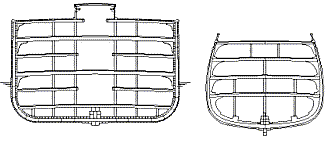
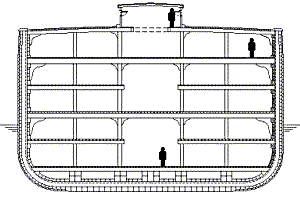
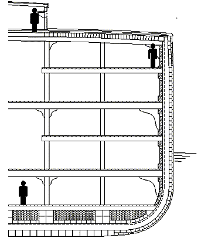
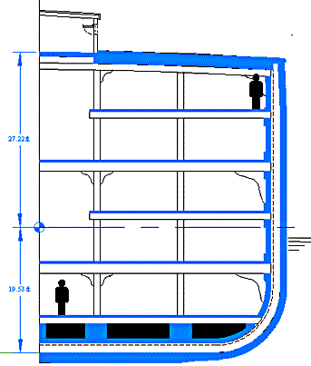
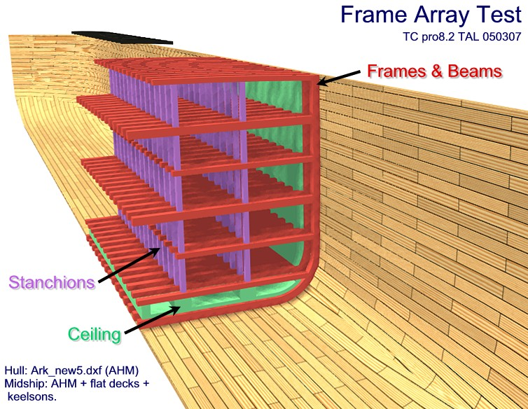

Noah's Ark compared to the 1853 cutter "The Great Republic".

Image © Allen Magnuson 2005. Used with permission. Image of Great Republic © Tim Lovett based on ref [1]
The speculative midship section of Noah's Ark (left) is based on the 18" cubit.
The Great Republic was the the only 4 deck clipper ever built. It was accidentally burned soon after its completion. The above image show the famous 330 ft, 4555 ton timber ship with it's original 4 decks. When salvaged and rebuilt it was simplified to 3 decks and 3 masts. Notice the pronounced "tumblehome" - the inward slope of the sides of the hull. This shape is less stable than a straight sided vessel, and a suggested origin was the men-of-war ships with their batteries of canons. [1]
Camber [2] of the weatherdeck (top deck) is designed to drain water overboard without creating puddles. This was carried through all the decks in sailing ships like the Great Republic. It would be much easier to use straight beams if the internal decks are dry. In any case camber can be added if drainage is an issue.

Image © Tim Lovett based on image by Allen Magnuson 2005.
The above image shows the internal (enclosed) decks without camber. Here, the same 2:2:1 deck height scheme is followed. The protruding keel of a timber ship had a tendency get sheared off in a grounding accident, so the central keel is continued across the entire bottom to protect the Ark during launch and beaching. Additional keelsons (bilge keelsons) are added under the stanchions. A second hull planking layer is also added to prevent damage by impact with floating debris, and provide additional (spare) strength to the hull.

Image © Tim Lovett based on image by Allen Magnuson 2005.
The above image shows a combination of the variable deck height and the integrated roof concept. Treating the internal decks as structurally less significant than the hull wall, the lowest deck is now the single level. (Heavy storage, animals that prefer dark).
The high strength hull allows more freedom in lighting and ventilation, making extensive use of slatted decking. Ventilation can also be directed between vertical frames behind the ceiling (inboard longitudinal layer).
Cross-laminated hull planking could be discarded for a number of reasons, here are three. Firstly the bilge radius (massive effort in bending planks around the curve). Secondly the lack of ancient examples. While the latter cannot be used to disprove the idea of a cold-molded Ark, there is an attractive alternative in Greek trireme planking methods - mortise and tenon edge jointing. Thirdly, the sawing. Fewer layers of thicker planks is preferable from a labor saving perspective, and makes pit-sawing a viable solution. Fixing the planks is also much less complicated than manipulating huge planks at 45 degrees.
This method is labor intensive but unlike the Greek super row boats, the Ark did not need to be optimized for weight. So instead of precision mortise and tenon joints, simple trunnels would do the job. Following the same thinking as the Greeks of 300BC and Chinese of 1400AD, multiple layer of planks work better than one - especially when rot is a non-issue.
 Image © Tim Lovett based on image by Allen Magnuson 2005. |
Longitudinal element area moment check. The blue area shown in the midship section represents longitudinal timbers
that could carry axial stresses due to primary hogging and sagging (neg and pos
vertical bending) loads. Area properties by CAD are;
Total Area: 23603518.15 mm^2 Compare working stress for Douglas Fir 8.6 MPa. Teak 6.9MPa, Spotted Gum 17.0 MPa. These are typical building design stresses. Note that these working stresses for wood are very conservative. Douglas Fir is listed at 87Mpa MOR yet is given a working stress of only 8.6MPa - a massive safety allowance of ten. This is to account for quality defects in timber, its anisotropic mechanical properties, the roughness of load estimation normally associated with standard wooden structures, and deterioration over a long period of time. Steel structures runs much 'closer to the bone', as evidenced by the working stresses specified in the ship design rules; ABS (175MPa), Lloyds, Veritas, Nippon etc). |
The following image is a "work in progress" shot based on the midship layouts described above. This detailing follows on from the lofted hull (CAD tutorial), although this hull has since been reworked by Allen Magnuson. For simplicity, the decking has not been shown and hull planking is oversize to suit the limitations of web images. Colors are for clarity only - we are not saying Noah's pitch was red, green and violet.

Image © Tim Lovett based on design by Allen Magnuson 2005.
1. The American-Built Clipper Ship 1850-1856, Characteristics, Construction, Details. W.L.Crothers, McGraw Hill (1997). p54. Tumblehome has the effect of making the top deck (weatherdeck) smaller. The claim is that this was introduced during the galleon era when large numbers of canons could make the hull top-heavy. A smaller top deck lowers the centre of gravity, but it also reduces the righting moment quite significantly. Another reason for tumblehome might be to keep the lee rail out of the water when heeling. A more sensible excuse is the strengthening effect of a barrel shaped hull, approaching the cylindrical shape of a submarine or pressure vessel. Significant tumblehome is virtually absent on modern ships, the sides are more likely to be vertical or even slightly outward sloping (flare). Return to text
2. ibid p56. Camber: Apart from drainage, the deck camber helped to reduce canon recoil (another unnecessary tradition). Claims of increased strength is rather dubious, the camber is typically 6 inches over a 40 feet beam which is certainly not an effective arch. The end constraint could never be rigid enough to resist the mere 1/6" increase in beam length achieved by flattening out the camber. It may look pretty to build bridges with a slight upwards curvature, which can accommodate creep without an unsightly sag, but it adds nothing to the strength. I suspect the most likely reason for camber of the lower decks was to keep a constant headroom under the cambered weatherdeck. Space was always a premium. Return to text